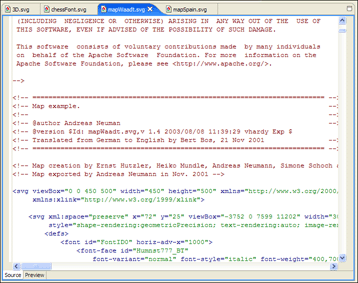
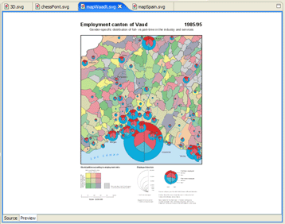

Editing SVG Files
To edit an SVG file double click on the file in the Navigator view. The SVG editor is mapped
to the *.svg and the *.svgz suffix and it offers a raw text and a graphical view page. The graphical
view page will use scrollbars if the image size is larger than the currently visible area. Any changes
made to the source code of the SVG file will immediately become visible either in the 'SVG Preview'
View or in the graphical view page.
Note: the 'SVG Preview' view is not linked to the SVG editors, which means that the view will
continue to show the last selected SVG file and not the SVG file of the currently used editor.
A future release might
offer a 'Link View' action.

